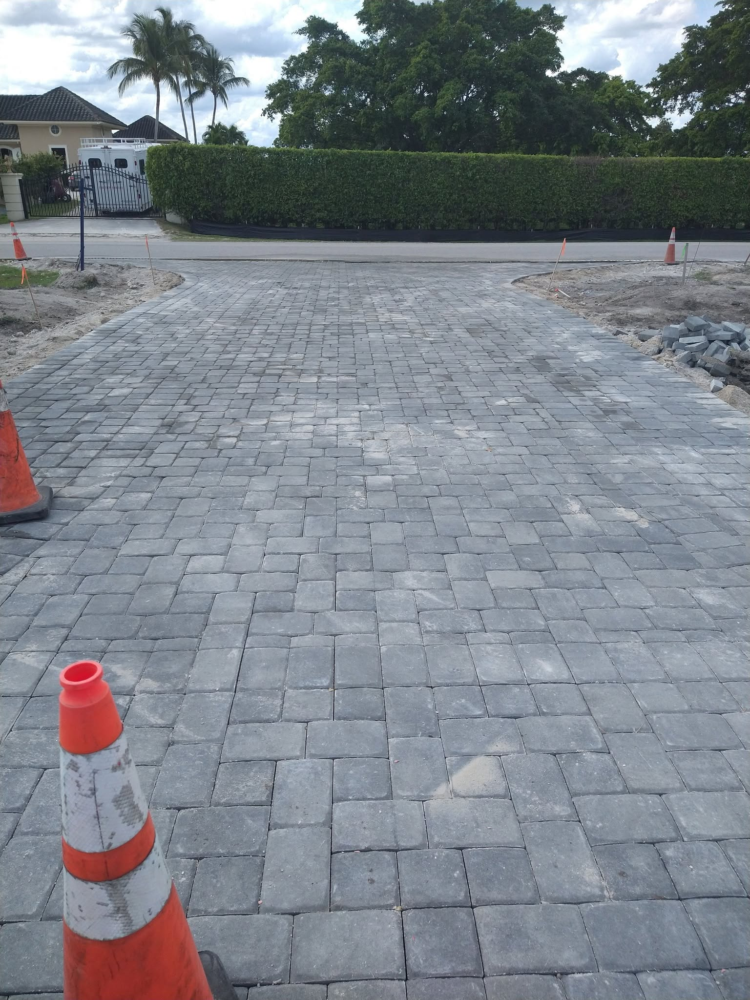
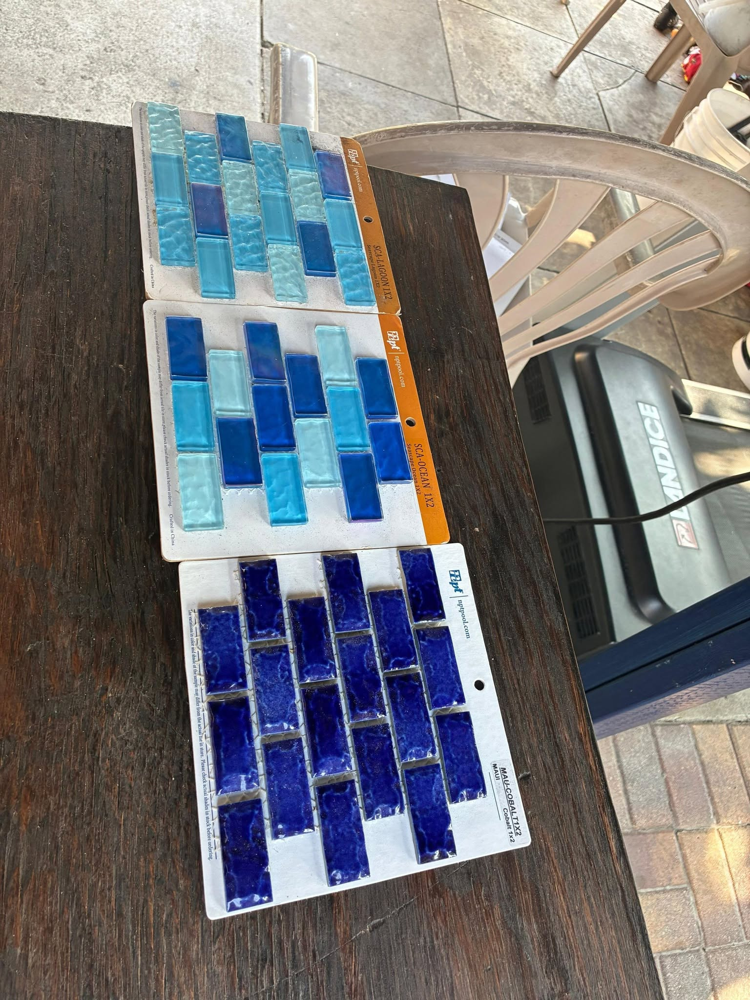

Before & After
Repair Project Gallery




Cracked, sinking, stained, or faded pavers? We restore them to like-new condition — fast, affordable, and guaranteed to last. No full replacement needed.

Most paver surfaces that look worn or damaged don't need to be torn out and replaced. With professional repair and restoration, we can bring your existing pavers back to life — saving you thousands of dollars and days of disruption.
We diagnose the root cause of every paver problem — whether it's a failing base, washed-out joint sand, storm damage, or simple wear — and fix it right the first time.
If your pavers have any of these issues, call us — these are all repairable without full replacement.
Pavers sink when the base compacts or washes out. We re-excavate, restore the base, and reset the pavers level — permanently fixing the problem.
Individual cracked or chipped pavers are replaced with matching material. The result is seamless and invisible — no one will know it was ever repaired.
Weed growth through joints means the joint sand has eroded. We remove weeds, clean the joints, and re-fill with polymeric sand that locks them out for years.
Ants tunnel through deteriorated joint sand. Our polymeric sand re-jointing seals the gaps and eliminates the entry points they use to invade your pavers.
We use professional-grade pressure washing and specialized stain treatments to remove oil, rust, mildew, and discoloration from paver surfaces.
Florida's sun bleaches paver color over time. Professional sealing restores the original richness and vibrancy — your pavers will look new again.
Complete paver restoration from base repair to final sealing — everything your pavers need to look and perform like new.
We lift sunken pavers, repair the base, and reset them perfectly level. The single most impactful repair we do.
Cracked or stained pavers are swapped for matching replacements. Invisible result, fraction of full replacement cost.
Professional pressure washing removes years of dirt, algae, mildew, and staining from any paver surface.
We clean out old sand and refill joints with polymeric sand — locking out weeds, ants, and water for years.
Wet look or natural finish sealers protect your pavers from staining, UV fading, and Florida's weather. Recommended every 2–3 years.
Loose or failed edge restraints allow pavers to spread and shift. We re-install or replace edge restraints to stop spreading permanently.

We assess every inch of your paver surface — checking base stability, joint sand condition, cracked or sunken units, edge restraints, and drainage. We identify the root cause, not just the visible symptoms.
We pressure wash the entire surface to remove dirt, algae, mildew, and old sealer — starting fresh for the best possible repair and sealing results.
Sunken or unstable areas are excavated, the base is rebuilt correctly, and pavers are reset level. Any cracked or broken pavers are replaced with matching units.
All joints are cleaned out and refilled with premium polymeric sand. This step eliminates weeds, ants, and water infiltration — locking your pavers in place.
A professional-grade sealer is applied — enhancing color, protecting against stains and UV damage, and extending the life of your pavers for years to come.
Even pavers in good condition benefit greatly from regular professional sealing. We recommend sealing every 2–3 years to maintain color, prevent staining, and protect your investment.
Florida's intense sun, heavy rain, and humidity accelerate wear on unsealed pavers. Sealing is the single most cost-effective maintenance step you can take — protecting thousands of dollars of hardscaping for the cost of a single service visit.
Call for Sealing QuoteIn most cases, repair is the right answer. If the majority of pavers are intact and the base is structurally sound, we can fix isolated problems at a fraction of replacement cost. We'll give you an honest assessment during your free inspection — we won't recommend replacement if repair will achieve the same result.
We work to source the closest matching pavers available. Older pavers do develop a natural patina, and new ones may be slightly different at first — but after sealing and a short weathering period, the match becomes virtually seamless.
Most repair and restoration projects are completed in 1–2 days. Sealing alone takes just a few hours after the surface has been cleaned and dried. More extensive base repairs may take 2–3 days.
We recommend sealing every 2–3 years in Florida's climate. Heavy traffic areas, pool decks, and surfaces with direct sun exposure may benefit from sealing closer to every 2 years.
Yes — spreading pavers are usually caused by failed or missing edge restraints. We replace or reinstall the restraints, push the pavers back together, re-sand the joints, and compact. This stops the spreading permanently.
The sooner you address paver problems, the less it costs to fix. Call us for a free inspection in Palm Beach County.